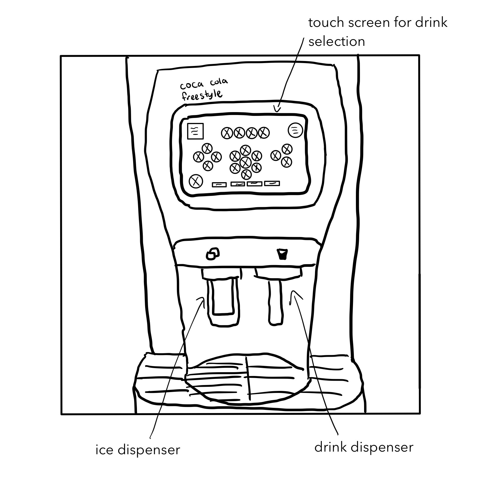

~Persona & Storyboarding Project~
I began my journey of exploring user design with this Persona & Storyboarding project. I learned how to empathize with users and create a storyboard
based upon personas I created from observations of how they interacted with a select interface.
I. Interface Description
I chose to observe how students interact with the Coca Cola Freestyle. Students use this machine to dispense beverages and ice from in the dining hall. It solves the problem of too few drink options.
This machine gives students the choice of several kinds of Coca-Cola beverages and water.

II. User Observations
The user approaches the machine and looks for their drink amongst the circular beverage icons on the main menu screen. If users want ice, they generally first press their cup against the ice dispenser to receive ice before selecting a drink. Some users already know exactly what drink they want and are quickly able to find it. Others take some time to look at the options and then select. Once the user clicks on a drink, the screen advances to the screen with their drink of choice. The user then presses their cup against the drink dispenser to receive the drink. They then walk away with their beverage, and the screen automatically returns to the main menu. Some users like to mix more than one drink together, so they use the back button on the screen to select another beverage to add to their drink.
III. Interview Questions
I asked my users questions to help me understand their pain points:
- How often do you use this machine?
- With every meal, multiple times a day
- Are you able to find what you're looking for? Why or why not?
- No if beverage is unavailable
- No if beverage is watered down
- Do you know what you want before approaching the machine?
- Sometimes, depending on the meal
- How would you describe the process of selecting a drink?
- I click on the water button and then hold my cup to the dispenser
- I choose my drink and then choose a flavor, then dispense
- What is your response to the choices given on each screen?
- The water is easy to locate
- The types of beverages are well grouped
- The screen with flavors gives even more options
- Is there anything you find challenging about using the machine?
- Not knowing if the ice is finished
IV. Empathy Maps
The empathy maps below represent two types of user personas I identified based upon my user research:
Hydrating Hannah loves to drink water. The problem she has is that sometimes,
there is no ice in the machine. This persona represents people who generally get
water, and are satisfied with its ease of access through this interface.
Fizzy Fiona loves getting beverages other than water. The problems she faces are that sometimes
certain beverages are unavailable or watered down. Also, sometimes there is no ice. This persona
represents people who enjoy choosing between different types of drinks to have with their meal.
V. Storyboard
Lastly, I created a storyboard from the Fizzy Fiona persona to map out this user journey.
~Responsive Redesign Project~
For this project, I practiced the workflow of redesigning a website for a local Providence nail salon,
Metro Nails, because it appeared outdated and had significant usability issues.
Below are some screenshots of the website's home page:
Metro Nails Site
I. Identifying Usability Problems
I assessed the usability of this website in terms of usability (e.g., including efficiency), learnability, and memorability, and its conceptual model.
Here are the problems I identified:
- Does not follow modern real-world conventions for nail salon websites (ex: no booking options)
- There is a lack of the brand's identity
- Nav-bar doesn’t link to the most valuable information options for users
- Information hierarchy does not follow a natural and logical order
- There is information that is irrelevant and repeated (ex: links to review sites)
- The images on the bottom are poorly laid-out and appear outdated
- Font styles and color vary too much throughout the page in an unclear way
II. Accessibility Issues
In addition to analyzing the website on the aforementioned usability guidelines, I used WebAIM WAVE to detect accessibility problems:
- Several areas of very low contrast between background and text
- Lack of alt-text for images
III. Low-fidelity Wireframing
I created wireframes to solve the problems I identified. The mobile and tablet are the same because I wanted a seamless experience between the two smaller screen sizes.
LAPTOP
TABLET

PHONE
IV. Visual Design Style Guide
I created a create a visual design style guide in Figma that displays the main colors, typography, and reusable components’ different states.
V. High-Fidelity Prototypes
Using Figma, I created a total of 3 high-fidelity prototypes of the salon's home page, one for desktop, tablet, and mobile.
VI. Responsive Redesign
Using the final high-fidelity prototypes, I created the page using HTML and CSS! I was able to acheive my accent color appearing when hovering
over buttons and links. Also, my nav-bar collapses into a hamburger menu icon when the screen size gets smaller. The text also descreases in size for smaller screen sizes,
and the contents dispalyed in rows shifts to being displayed in columns. I used this Youtube tutorial to help me with my code:
Easy Tutorial's video
~Iterative Design Project~
For this project, I worked in a team to design an app for a vintage wholesale marketplace with feedback and user testing
I. Pre-Design Thinking
We chose to design Fleek, which is a B2B Wholesale marketplace for second-hand fashion. This startup is targeted at a younger, millennial or Gen-Z audience (hence the name). Buyers can buy clothing in bulk, often in the form of bundles, directly from the seller. Buyers are comprised largely of vintage stores and online resellers. Suppliers include clothing wholesalers, rag-houses, and donation centers.
We chose to design a mobile interface because it's easier to snap and then upload pictures this way, the mobile interface makes it feel more interpersonal between buyers and sellers, the service is targeted towards a younger and trendier audience, and finally, it creates a more social-media like experience that will hopefully make the user feel like they're doing something fun rather than working.
II. Five Minute Sketches
With the aforementioned ideas in mind, we each created a variety sketches to imagine what this interface might look like.
III. Low-fidelity Wireframing
Next, we synthesized our ideas for design solutions into low-fidelity wireframes.
Notes on our design decisions:
We decided at first to create an app the worked for the buyer and the seller, where you would choose which one you wanted to be when you first set up an account. However, we ultimately decided in response to the critique that this was confusing and difficult for people who may want to do both.
We decided on a navigation bar at the bottom for easy, thumb-accessibe navigation, and we felt that it was important to have a search page where you could discover, search and filter items, a chat page where you could negotiate possible deals and connect with sellers/buyers, and a profile page including your favorited/saved items. Searching is of course very important functionality, but we wanted to add a profile and chat to foster more interpersonal connection.
IV. High Fidelity Mockup
We presented our first draft of mockups to our peers in critique, and in response to the feedback we recieved, we added the chat and home screens, removed the option to be a seller as were told that this option was confusing and figured the buyer and seller functions would be best implemented as two different apps. We also added a list of favorited items and functionality to view order history, as per the crit feedback.
V. User Testing
We conducted user tests in order to test the efficiency of our design solutions. We came up with a blurb, tasks, and post-task questions for our users:
Blurb:
This is not an actual website but an interactive mockup made on prototyping software. You are a vintage shop called Nostalgia and you are buying wholesale vintage Harley Davidson t-shirts for your shop. This website allows you to find businesses that sell vintage wholesale products and buy their products.
Tasks:
Search for vintage tops
Filter for the Harley Davidson brand and select the Harley Tees Bundle
Add the Harley Tees Bundle to your cart
Questions:
- On a scale from 1 to 5, how easy was it to know an item was added to the cart? (1 = very difficult, 5 = very easy)
- On a scale from 1 to 5, how useful is the chat function to the experience of using an app like this? (1 = not useful at all, 5 = very useful)
- On a scale from 1 to 5, how useful was the information on the Harley Tees Bundle item page? (1 = not useful at all, 5 = very useful)
- On a scale from 1 to 5, how easy was it to navigate this app? (1 = very difficult, 5 = very easy)
User Test 1

User Test 2

User Test 3

VI. User Testing Analysis
The overall task we gave was to shop for a specific item bundle and add it to their cart, which we split into the following subtasks: “search vintage tops, filter for the Harley Davidson brand and select the Harley Tees Bundle, then add the bundle to your cart.” The users were successful for each task and generally described the interface as “easy to use and navigate”.
While most users did not face many issues, a point of error/confusion was the quantity vs amount of pieces shown when shopping. Specifically, we ask the user to add a bundle to their cart, which includes 20 pieces, but the quantity is listed as 1 because each bundle is 20 pieces. Users found that it might be a bit confusing to list the quantity as 1 instead of 20.
Users were able to complete the tasks successfully and pretty efficiently, though one user was unsure of completing a task because for our search function, the user simply clicks the search bar, instead of typing the actual query.
Potential interface changes we could make are clearly indicating that each bundle includes X pieces, so we can put conversions for the quantities. For example, if each bundle includes 20 pieces, picking quantity 1 will show (20pc), quantity 2 (40pc), etc. As well, we could have live time assistance with an employee through our chat feature, which one user was hoping to see.